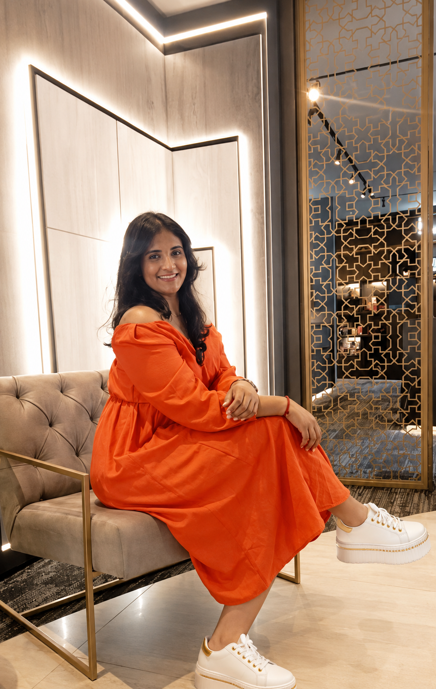
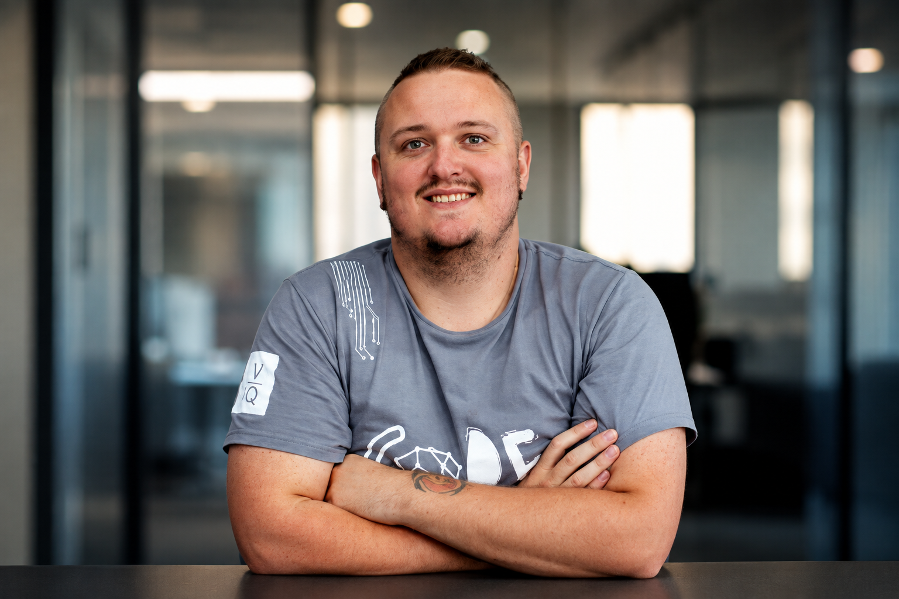
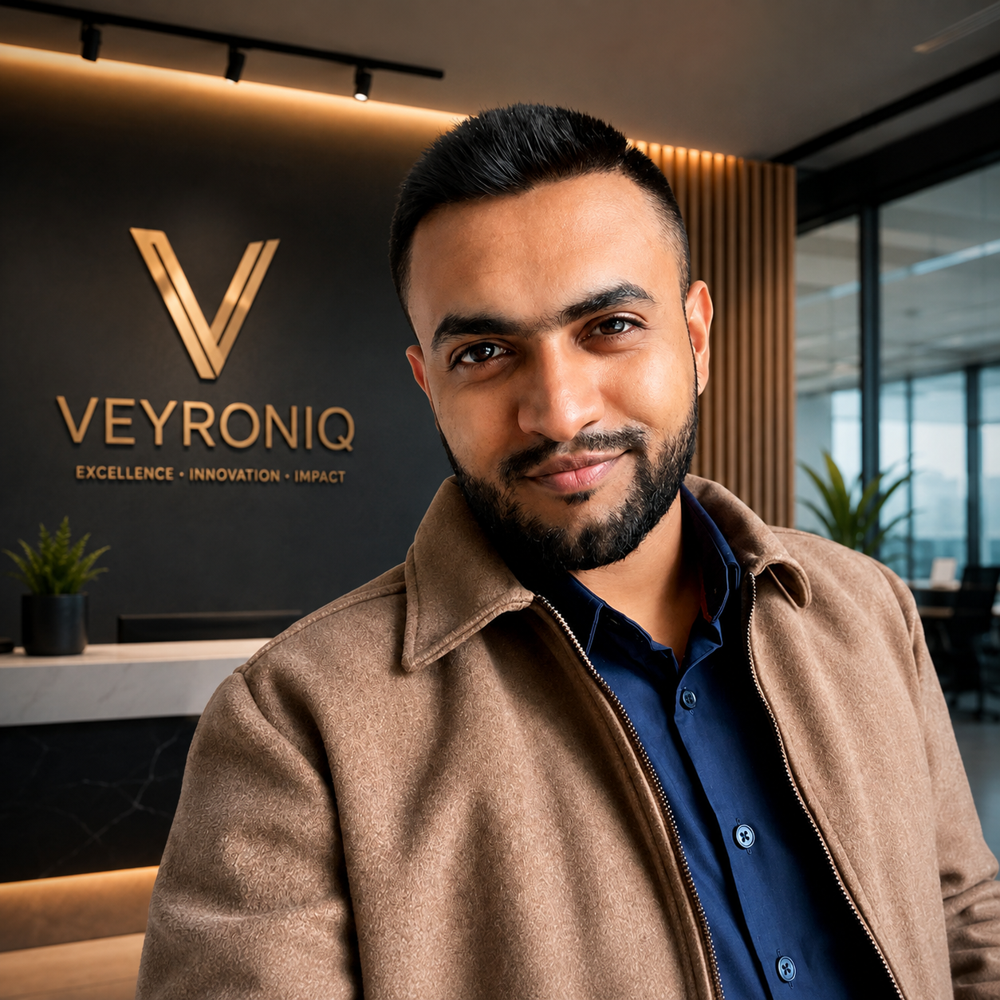

Roma Cheethan Lal
Founder
Roma leads Veyroniq with a focus on building meaningful technology, strong client relationships and a company that values quality over quantity
Building the vision. Creating the foundation
Veyroniq Software Studio was founded in London in 2020 with a simple belief: Great software should make people's work better, not harder. Today, our team of six specialist developers designs, builds, deploys and maintains custom B2B SaaS products and business applications. But behind every line of code is a person, a business, and a problem worth solving. We don't just build software. We build possibilities

Roma leads Veyroniq with a focus on building meaningful technology, strong client relationships and a company that values quality over quantity
Building the vision. Creating the foundation

Cuan works alongside the founder to shape Veyroniq's direction, strengthen its capabilities, and ensure the business continues to grow with purpose.
Turning ideas into action.

Yastish works closely with clients to understand their needs and identify how Veyroniq's software engineering and digital solutions can create real business value.
Understanding the challenge. Finding the opportunity.
Olona helps drive the technical side of Veyroniq, contributing to the development and delivery of reliable, scalable software solutions for businesses.
Solving complex problems through technology.

Steven helps coordinate the operational side of Veyroniq, supporting the team and ensuring projects, processes, and people stay aligned.
Creating the structure behind the work.
We develop software solutions designed around specific business operations, including workforce scheduling, invoicing, payment management, retail inventory and appointment booking.
Yes. Our products are designed around the workflows and challenges of specific industries, including hospitality, trades, retail and appointment-based services.
Our software can be designed around the operational requirements of a business, allowing functionality and workflows to be aligned with specific business needs.
Yes. Our expertise can be applied to developing digital platforms and software solutions tailored to different business requirements.